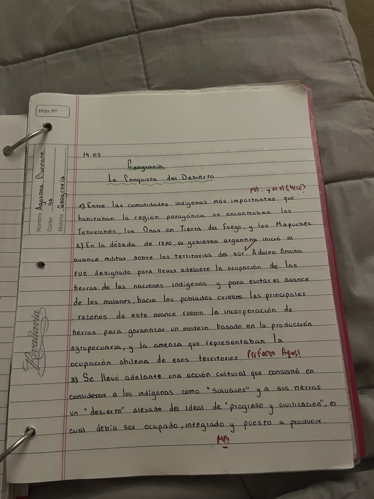

¿Por qué las Malvinas aparecen en Geografía?
La cuestión de las Islas Malvinas se relaciona con el territorio y la soberanía argentina. En la carpeta se trabajaron especialmente las cuestiones de gobernanza y los argumentos que utiliza Argentina para sostener su posición sobre las islas.
La soberanía se relaciona con el derecho de un Estado a ejercer autoridad sobre un territorio. Por eso, el caso de las Malvinas puede estudiarse desde una perspectiva geográfica, política e histórica.
Argumentos relacionados con la soberanía
Uno de los argumentos que aparece en los apuntes es la continuidad geográfica. Las islas se encuentran en el Atlántico Sur, frente al territorio continental argentino, y forman parte de la discusión sobre la soberanía de este espacio.
También es importante diferenciar territorio, soberanía y administración: un territorio puede ser objeto de una disputa y, al mismo tiempo, existir una discusión sobre quién ejerce efectivamente su gobierno.
La cuestión Malvinas es una cuestión de soberanía porque se discute qué Estado debe ejercer autoridad sobre las islas.
Las Malvinas y el territorio argentino
Para estudiar el territorio argentino es importante tener en cuenta tanto el espacio continental como los espacios insulares y marítimos vinculados al país. Las Malvinas ocupan un lugar importante dentro de esta mirada territorial y dentro de la identidad nacional argentina.
